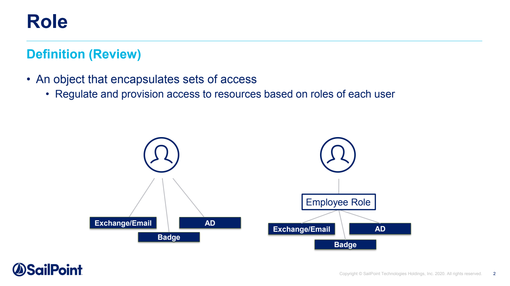
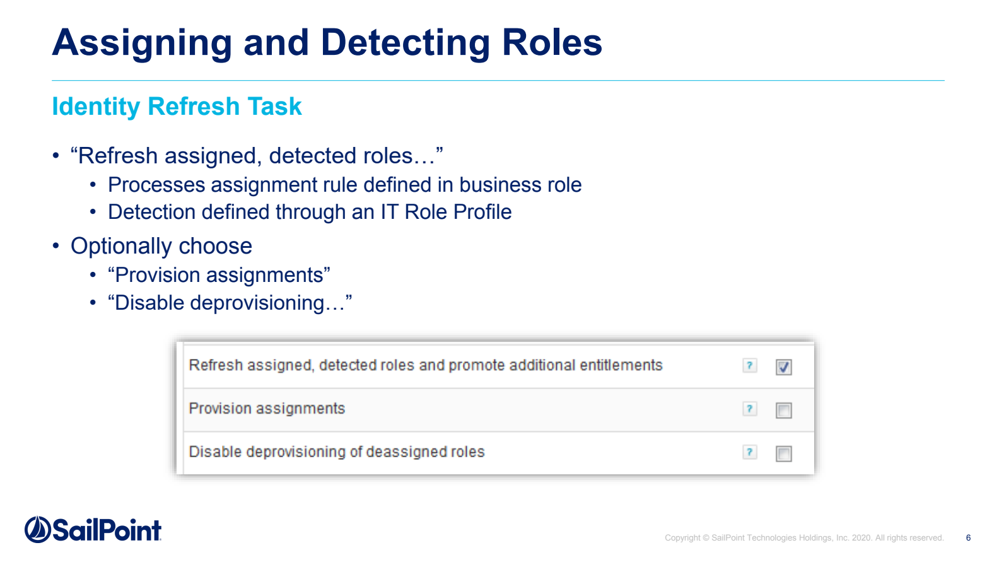
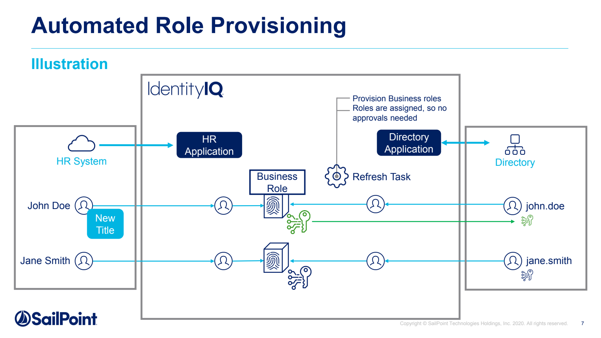
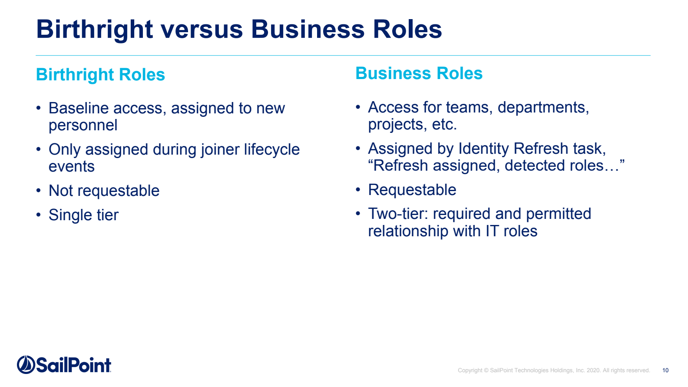
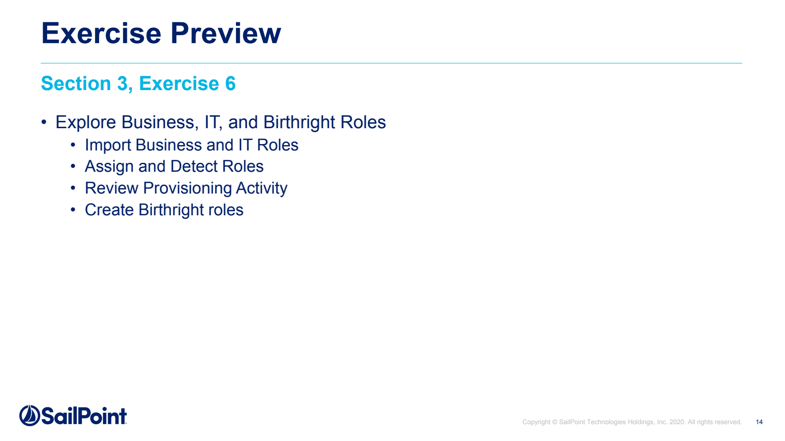

All course topics · Practice companion
20. Introduction to Roles
Model access at business and technical levels
A role groups access into a meaningful unit. The default two-tier model separates business roles, reflecting responsibilities and assignment/request choices, from IT roles, whose profiles describe entitlement sets detected on identities. The Finance/Treasury illustration shows business responsibilities sharing technical access components.
A required relationship means the associated IT access belongs with the business role. A permitted relationship makes an IT role an allowed additional choice that still must be requested; it is not automatically provisioned simply because it is permitted.




Assignment, detection and provisioning
The identity-refresh option for assigned/detected roles evaluates business-role assignment logic and IT-role profiles. Provision assignments and deprovisioning controls determine additional effects. A role being detected from existing access is conceptually different from a business role being assigned and then causing access changes.
The automated example changes an HR attribute, refreshes the identity and provisions the business-role access. In the depicted assigned-role path, no request approval is required. That example should not be generalized to every custom role workflow.



Birthright roles
Rapid Setup birthright roles supply baseline access during joiner processing. The course describes them as a single-tier, non-requestable model assigned during the joiner event. Business roles, by contrast, can support continuing team/department/project needs, refresh-based assignment and the two-tier required/permitted relationships.
Exercise 3.6 imports and inspects business/IT roles, refreshes assignment/detection, checks provisioning evidence and the resulting cube, and defines birthright roles for later joiner exercises. It also distinguishes role definitions from the actual entitlements held on target accounts.





Related practice and source pages
Section Three — overview and contents · Exercise 3.6 — Business, IT and Birthright Roles